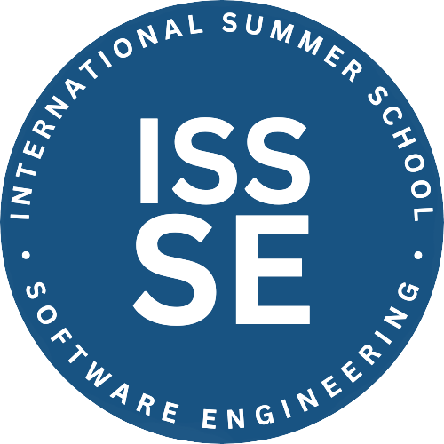

The 18th edition of the International Summer School on Software Engineering (ISSSE 2026) will focus on emerging challenges at the intersection of Artificial Intelligence and Software Engineering.
Large Language Models (LLMs) are rapidly transforming software development, enabling developers to generate code faster than ever before. At the same time, new paradigms based on AI agents and self-evolving
software systems are emerging, raising important challenges for software quality, reliability, and maintainability.
ISSSE 2026 will explore these challenges and opportunities, bringing together leading researchers working
on LLM-based Software Engineering, optimization and search-based techniques, automated testing, empirical software engineering, and agent-based software development.
ISSSE will be held at the University of Salerno's computer science department, located a few kilometers from Salerno at the junction of motorway intersections—more details at https://web.unisa.it/en/home.
The best way to reach the campus from abroad is first to go to Salerno. The nearest International Airport is Naples Capodichino (code NAP). You can take a bus (Alibus) from the airport to the central station in Naples and get off here for connections to Salerno through high-speed and traditional train services.
Frequent buses connect the city to the university. Specifically, buses number 7 and 17 ("Linea 7" and "Linea 17" in Italian) arrive at the university from the Salerno train station (Salerno FS).
More information on the bus route can be found on the main page of Busitalia.
A dedicated app, QuiBus Campania, is available for Android and iOS and allows rapid individuation of available routes. The app can be downloaded for Android or iOS (Italian language only!).
Salerno is located about 60 km south of Naples and is considered a gateway to the Amalfi Coast. It offers much, from a medieval city center that takes you back to its ancient and prestigious origins to a seafront with modern and avant-garde architecture.
Regarding accommodation, we recommend you use Booking. You can find possible solutions at the following link.
Please modify the filters to match your needs.
More details on the registration will be added.
Software Engineering Lab Salerno (SESA Lab): sesalab@unisa.it